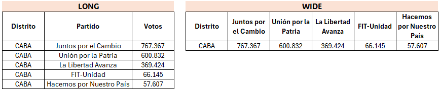

library(tidyverse)2. Procesamiento
La idea de este apartado es entender más a fondo cómo trabajar tablas para poder hacer análisis y visualización. Será necesario ver algunas cuestiones de ejecución básica de R y algunas funciones típicas de Tidyverse para limpiar y transformar nuestra base de datos. Un pequeño punteo:
- tipos de objetos
- operadores
- funciones de lectura y escritura de archivos
- funciones de resumen y exploración de una base de datos
- funciones de transformación de columnas y valores
- formas típicas de ordenar una base de datos (wide, long)
- unión y consolidación de distintas tablas
Empecemos.
2.1. Pregunta-problema
Se mantendrá la tradición: definiremos una guía analítica para que las operaciones que hagamos tengan un sentido claro y sea más sencillo entender cuál es la información relevante.
En este caso nos vamos a seguir preguntando por el voto en blanco en las elecciones argentinas. ¿Qué particularidades presenta en las distintas provincias?
2.2. Fuentes de datos
Los datos electorales son una fuente compleja de abordar por el volumen de información que conlleva. El dataset completo está disponible en https://www.argentina.gob.ar/dine/resultados-electorales/elecciones-2023 y vamos a estar utilizando el de las elecciones generales de 2023. No olviden descomprimir el archivo luego de descargarlo. Lo interesante de tomar este tipo de datos es el nivel de desagregación: tenemos resultados por mesa. En los comicios locales, cada mesa pertenece a un circuito, cada circuito pertenence a una sección y cada sección pertenece a un distrito. Por poner un ejemplo: tenemos la mesa 12 en el circuito 12A pertenenciente a la sección Comuna 12 del distrito Capital Federal. Salvo las mesas, todos los niveles de agregación tienen un código y un nombre. Por ejemplo, la Provincia de Buenos Aires es el distrito n° 2 y Luján es la sección n° 71.
Vamos primero a cargar la librería de Tidyverse. En general, la carga de todas las librerías necesarias se realiza al principio del script, por una cuestión de estructura general (sirve para saber si tenemos instaladas todas las necesarias, qué tipo de funciones vamos a utilizar, etc.).
2.3. Objetos y operadores
En la programación hay distintas lógicas de construcción de lenguajes. R se inscribe dentro de la programación orientada a objetos, es decir, cada elemento es tratado como un objeto. No vamos a profundizar, pero nos va a servir saber que una de las características esenciales de los objetos es que pertenencen a una clase. ¿Qué implica? La clase del objeto va a determinar un conjunto de propiedades y operaciones que podemos aplicar en dicho objeto. Los tipos o clases de objetos que vamos a estar utilizando son:
Simples
- character: texto.
- numeric: números.
- logical o bool: puede ser verdadero (TRUE) o falso (FALSE).
Compuestos
- vector: lista de elementos del mismo tipo; unidimensional.
- dataframe: lo que usualmente llamamos tablas. Tienen filas y columnas.
Hay ciertas palabras y caracteres en los lenguajes de programación que están reservados para funciones específicas; en general cambian de color en Rstudio. Esas palabras reservadas no se pueden usar para nombrar objetos nuevos, por ejemplo.
# veamos las diferencias entre escribir la misma palabra de distintas formas
class(FALSE)[1] "logical"#class(False)
class("False")[1] "character"Un repaso rápido por los operadores más comunes nos muestra los siguientes.
# operadores aritméticos
10 + 10 # suma[1] 2010 - 10 # resta[1] 010 * 2 # multiplicación[1] 2010 / 2 # división[1] 510**2 # elevación[1] 100# operadores de relación
2 > 10 # menor[1] FALSE10 > 10 # mayor[1] FALSE10 >= 10 # mayor[1] TRUE"karl" == "marx" # es igual[1] FALSE"karl" != "marx" # es distinto[1] TRUE"marx" %in% c("marx", "durkheim", "weber") # está presente en [1] TRUE# operadores lógicos
TRUE & FALSE # operador lógico "Y"[1] FALSETRUE | FALSE # operador lógico "O"[1] TRUE# de asignación
a = 2 #asignamos lo que está a la derecha a lo que está a la izquierda del operador
a[1] 2b <- 3 # idem
b[1] 3Carguemos nuestra base de datos para arrancar.
2.4. Procesar resultados electorales
Carguemos sólo 6000 filas, sabiendo que es un dataset muy grande y que quizás se demore mucho cargar toda la base de primera. Veamos una parte para entender la estructura.
ruta <- "data/encuentro_2/2023_Generales/ResultadosElectorales_2023.csv"
data <- read_csv(ruta, n_max=6000) # cargamos sólo 6000 filas
data# A tibble: 6,000 × 23
año eleccion_tipo recuento_tipo padron_tipo distrito_id distrito_nombre
<dbl> <chr> <chr> <chr> <dbl> <chr>
1 2023 GENERAL PROVISORIO NORMAL 1 Ciudad Autónoma de…
2 2023 GENERAL PROVISORIO NORMAL 1 Ciudad Autónoma de…
3 2023 GENERAL PROVISORIO NORMAL 1 Ciudad Autónoma de…
4 2023 GENERAL PROVISORIO NORMAL 1 Ciudad Autónoma de…
5 2023 GENERAL PROVISORIO NORMAL 1 Ciudad Autónoma de…
6 2023 GENERAL PROVISORIO NORMAL 1 Ciudad Autónoma de…
7 2023 GENERAL PROVISORIO NORMAL 1 Ciudad Autónoma de…
8 2023 GENERAL PROVISORIO NORMAL 1 Ciudad Autónoma de…
9 2023 GENERAL PROVISORIO NORMAL 1 Ciudad Autónoma de…
10 2023 GENERAL PROVISORIO NORMAL 1 Ciudad Autónoma de…
# ℹ 5,990 more rows
# ℹ 17 more variables: seccionprovincial_id <dbl>,
# seccionprovincial_nombre <chr>, seccion_id <dbl>, seccion_nombre <chr>,
# circuito_id <chr>, circuito_nombre <chr>, mesa_id <dbl>, mesa_tipo <chr>,
# mesa_electores <dbl>, cargo_id <dbl>, cargo_nombre <chr>,
# agrupacion_id <dbl>, agrupacion_nombre <chr>, lista_numero <dbl>,
# lista_nombre <lgl>, votos_tipo <chr>, votos_cantidad <dbl>La mayor particularidad de los resultados electorales es tener formato long (largo). En el formato long, cada fila de la tabla representa una observación única para una combinación específica de variables. Es útil para trabajar con datos que necesitan ser agrupados o resumidos fácilmente. Cada variable está dividida en dos columnas: una para el nombre de la variable y otra para su valor. El formato alternativo es wide, donde cada fila representa una observación única y cada columna representa una variable diferente. Es útil cuando se necesita acceder rápidamente a las variables individuales sin necesidad de realizar transformaciones adicionales.

En la base hay un gran número de columnas, que podemos explorar con la función names(). También hay elecciones a distintos cargos, como legislativos.
names(data) [1] "año" "eleccion_tipo"
[3] "recuento_tipo" "padron_tipo"
[5] "distrito_id" "distrito_nombre"
[7] "seccionprovincial_id" "seccionprovincial_nombre"
[9] "seccion_id" "seccion_nombre"
[11] "circuito_id" "circuito_nombre"
[13] "mesa_id" "mesa_tipo"
[15] "mesa_electores" "cargo_id"
[17] "cargo_nombre" "agrupacion_id"
[19] "agrupacion_nombre" "lista_numero"
[21] "lista_nombre" "votos_tipo"
[23] "votos_cantidad" table(data$cargo_nombre)
PRESIDENTE Y VICE SENADOR NACIONAL
5844 156 Vamos a cargar la base completa pero usando una función especial para ir filtrando los casos antes de cargar la base, para que nos pese menos el objeto y podamos manipularlo con comodidad.
f <- function(x, pos){
filter(x,(cargo_nombre == "PRESIDENTE Y VICE"))
}
data <- read_csv_chunked(ruta, DataFrameCallback$new(f), chunk_size=10000)
dim(data) # vemos cuántas filas y columnas tiene[1] 1045200 23head(data) # vemos las primeras 5 filas# A tibble: 6 × 23
año eleccion_tipo recuento_tipo padron_tipo distrito_id distrito_nombre
<dbl> <chr> <chr> <chr> <dbl> <chr>
1 2023 GENERAL PROVISORIO NORMAL 1 Ciudad Autónoma de …
2 2023 GENERAL PROVISORIO NORMAL 1 Ciudad Autónoma de …
3 2023 GENERAL PROVISORIO NORMAL 1 Ciudad Autónoma de …
4 2023 GENERAL PROVISORIO NORMAL 1 Ciudad Autónoma de …
5 2023 GENERAL PROVISORIO NORMAL 1 Ciudad Autónoma de …
6 2023 GENERAL PROVISORIO NORMAL 1 Ciudad Autónoma de …
# ℹ 17 more variables: seccionprovincial_id <dbl>,
# seccionprovincial_nombre <chr>, seccion_id <dbl>, seccion_nombre <chr>,
# circuito_id <chr>, circuito_nombre <chr>, mesa_id <dbl>, mesa_tipo <chr>,
# mesa_electores <dbl>, cargo_id <dbl>, cargo_nombre <chr>,
# agrupacion_id <dbl>, agrupacion_nombre <chr>, lista_numero <dbl>,
# lista_nombre <lgl>, votos_tipo <chr>, votos_cantidad <dbl>2.5. Exploración y recorte
Probablemente en la mayoría de los casos una base de datos venga con más información de la necesaria. Una de nuestras primeras tareas en el procesamiento de una base de datos va a ser recortar para quedarnos sólo con las filas y columnas que nos sirven. Tomar esas definiciones va a requerir un primer paneo general de la información que contiene la base de datos.
Existen funciones que nos van a resumir, a grandes rasgos, la totalidad de la base.
glimpse(data) # ¡hay otras de este tipo en el primer encuentro!Rows: 1,045,200
Columns: 23
$ año <dbl> 2023, 2023, 2023, 2023, 2023, 2023, 2023, 202…
$ eleccion_tipo <chr> "GENERAL", "GENERAL", "GENERAL", "GENERAL", "…
$ recuento_tipo <chr> "PROVISORIO", "PROVISORIO", "PROVISORIO", "PR…
$ padron_tipo <chr> "NORMAL", "NORMAL", "NORMAL", "NORMAL", "NORM…
$ distrito_id <dbl> 1, 1, 1, 1, 1, 1, 1, 1, 1, 1, 1, 1, 1, 1, 1, …
$ distrito_nombre <chr> "Ciudad Autónoma de Buenos Aires", "Ciudad Au…
$ seccionprovincial_id <dbl> 0, 0, 0, 0, 0, 0, 0, 0, 0, 0, 0, 0, 0, 0, 0, …
$ seccionprovincial_nombre <chr> NA, NA, NA, NA, NA, NA, NA, NA, NA, NA, NA, N…
$ seccion_id <dbl> 1, 1, 1, 1, 1, 1, 1, 1, 1, 1, 1, 1, 1, 1, 1, …
$ seccion_nombre <chr> "Comuna 01", "Comuna 01", "Comuna 01", "Comun…
$ circuito_id <chr> "00018", "00018", "00018", "00018", "00018", …
$ circuito_nombre <chr> "00018", "00018", "00018", "00018", "00018", …
$ mesa_id <dbl> 474, 474, 474, 474, 475, 475, 475, 475, 475, …
$ mesa_tipo <chr> "NATIVOS", "NATIVOS", "NATIVOS", "NATIVOS", "…
$ mesa_electores <dbl> 343, 343, 343, 343, 349, 349, 349, 349, 349, …
$ cargo_id <dbl> 1, 1, 1, 1, 1, 1, 1, 1, 1, 1, 1, 1, 1, 1, 1, …
$ cargo_nombre <chr> "PRESIDENTE Y VICE", "PRESIDENTE Y VICE", "PR…
$ agrupacion_id <dbl> 0, 0, 0, 0, 134, 132, 135, 136, 133, 0, 0, 0,…
$ agrupacion_nombre <chr> NA, NA, NA, NA, "UNION POR LA PATRIA", "JUNTO…
$ lista_numero <dbl> 0, 0, 0, 0, NA, NA, NA, NA, NA, 0, 0, 0, 0, 0…
$ lista_nombre <lgl> NA, NA, NA, NA, NA, NA, NA, NA, NA, NA, NA, N…
$ votos_tipo <chr> "NULO", "IMPUGNADO", "RECURRIDO", "COMANDO", …
$ votos_cantidad <dbl> 0, 0, 0, 0, 95, 59, 57, 9, 4, 4, 3, 0, 0, 0, …Quizás queremos ver algunas filas completas.
head(data, 10) # un top N de filas# A tibble: 10 × 23
año eleccion_tipo recuento_tipo padron_tipo distrito_id distrito_nombre
<dbl> <chr> <chr> <chr> <dbl> <chr>
1 2023 GENERAL PROVISORIO NORMAL 1 Ciudad Autónoma de…
2 2023 GENERAL PROVISORIO NORMAL 1 Ciudad Autónoma de…
3 2023 GENERAL PROVISORIO NORMAL 1 Ciudad Autónoma de…
4 2023 GENERAL PROVISORIO NORMAL 1 Ciudad Autónoma de…
5 2023 GENERAL PROVISORIO NORMAL 1 Ciudad Autónoma de…
6 2023 GENERAL PROVISORIO NORMAL 1 Ciudad Autónoma de…
7 2023 GENERAL PROVISORIO NORMAL 1 Ciudad Autónoma de…
8 2023 GENERAL PROVISORIO NORMAL 1 Ciudad Autónoma de…
9 2023 GENERAL PROVISORIO NORMAL 1 Ciudad Autónoma de…
10 2023 GENERAL PROVISORIO NORMAL 1 Ciudad Autónoma de…
# ℹ 17 more variables: seccionprovincial_id <dbl>,
# seccionprovincial_nombre <chr>, seccion_id <dbl>, seccion_nombre <chr>,
# circuito_id <chr>, circuito_nombre <chr>, mesa_id <dbl>, mesa_tipo <chr>,
# mesa_electores <dbl>, cargo_id <dbl>, cargo_nombre <chr>,
# agrupacion_id <dbl>, agrupacion_nombre <chr>, lista_numero <dbl>,
# lista_nombre <lgl>, votos_tipo <chr>, votos_cantidad <dbl>tail(data, 10) # las últimas N filas # A tibble: 10 × 23
año eleccion_tipo recuento_tipo padron_tipo distrito_id distrito_nombre
<dbl> <chr> <chr> <chr> <dbl> <chr>
1 2023 GENERAL PROVISORIO NORMAL 2 Buenos Aires
2 2023 GENERAL PROVISORIO NORMAL 17 Salta
3 2023 GENERAL PROVISORIO NORMAL 23 Tucumán
4 2023 GENERAL PROVISORIO NORMAL 10 Jujuy
5 2023 GENERAL PROVISORIO NORMAL 2 Buenos Aires
6 2023 GENERAL PROVISORIO NORMAL 2 Buenos Aires
7 2023 GENERAL PROVISORIO NORMAL 2 Buenos Aires
8 2023 GENERAL PROVISORIO NORMAL 22 Santiago del Estero
9 2023 GENERAL PROVISORIO NORMAL 14 Misiones
10 2023 GENERAL PROVISORIO NORMAL 18 San Juan
# ℹ 17 more variables: seccionprovincial_id <dbl>,
# seccionprovincial_nombre <chr>, seccion_id <dbl>, seccion_nombre <chr>,
# circuito_id <chr>, circuito_nombre <chr>, mesa_id <dbl>, mesa_tipo <chr>,
# mesa_electores <dbl>, cargo_id <dbl>, cargo_nombre <chr>,
# agrupacion_id <dbl>, agrupacion_nombre <chr>, lista_numero <dbl>,
# lista_nombre <lgl>, votos_tipo <chr>, votos_cantidad <dbl>sample_n(data, 10) # 10 filas al azar# A tibble: 10 × 23
año eleccion_tipo recuento_tipo padron_tipo distrito_id distrito_nombre
<dbl> <chr> <chr> <chr> <dbl> <chr>
1 2023 GENERAL PROVISORIO NORMAL 6 Chaco
2 2023 GENERAL PROVISORIO NORMAL 2 Buenos Aires
3 2023 GENERAL PROVISORIO NORMAL 13 Mendoza
4 2023 GENERAL PROVISORIO NORMAL 5 Corrientes
5 2023 GENERAL PROVISORIO NORMAL 8 Entre Ríos
6 2023 GENERAL PROVISORIO NORMAL 2 Buenos Aires
7 2023 GENERAL PROVISORIO NORMAL 2 Buenos Aires
8 2023 GENERAL PROVISORIO NORMAL 4 Córdoba
9 2023 GENERAL PROVISORIO NORMAL 21 Santa Fe
10 2023 GENERAL PROVISORIO NORMAL 2 Buenos Aires
# ℹ 17 more variables: seccionprovincial_id <dbl>,
# seccionprovincial_nombre <chr>, seccion_id <dbl>, seccion_nombre <chr>,
# circuito_id <chr>, circuito_nombre <chr>, mesa_id <dbl>, mesa_tipo <chr>,
# mesa_electores <dbl>, cargo_id <dbl>, cargo_nombre <chr>,
# agrupacion_id <dbl>, agrupacion_nombre <chr>, lista_numero <dbl>,
# lista_nombre <lgl>, votos_tipo <chr>, votos_cantidad <dbl>Quizás queremos contar apariciones de algunos valores.
data$votos_tipo %>% # contamos apariciones de tipo de votos hay, en absolutos
table() .
COMANDO EN BLANCO IMPUGNADO NULO POSITIVO RECURRIDO
104520 104520 104520 104520 522600 104520 data$distrito_nombre %>% # contamos % de apariciones de distritos
table() %>%
prop.table() %>%
round(digits=4)*100.
Buenos Aires
36.43
Catamarca
1.01
Chaco
2.82
Chubut
1.35
Ciudad Autónoma de Buenos Aires
7.01
Córdoba
8.70
Corrientes
2.64
Entre Ríos
3.28
Formosa
1.42
Jujuy
1.75
La Pampa
0.86
La Rioja
0.91
Mendoza
4.17
Misiones
2.75
Neuquén
1.60
Río Negro
1.71
Salta
3.15
San Juan
1.73
San Luis
1.25
Santa Cruz
0.87
Santa Fe
7.97
Santiago del Estero
2.36
Tierra del Fuego, Antártida e Islas del Atlántico Sur
0.49
Tucumán
3.75 Quizás queremos saber, de manera más general, cuántos valores únicos tiene cada una de las columnas.
sapply(data, n_distinct) # sapply sirve para aplicar una función a todas las columnas año eleccion_tipo recuento_tipo
1 1 1
padron_tipo distrito_id distrito_nombre
1 24 24
seccionprovincial_id seccionprovincial_nombre seccion_id
9 12 135
seccion_nombre circuito_id circuito_nombre
446 2335 2335
mesa_id mesa_tipo mesa_electores
9097 1 378
cargo_id cargo_nombre agrupacion_id
1 1 6
agrupacion_nombre lista_numero lista_nombre
6 2 1
votos_tipo votos_cantidad
6 264 Puntos interesantes hasta este punto: hay más de un millón de filas; cada una representa un tipo de voto en una mesa en particular; cada nivel de geográfico (distrito, sección, circuito), el cargo y la agrupación tiene id y nombre; al menos 8 columnas tienen un sólo valor, por lo que no nos sirven para esta base de datos.
Para seleccionar filas y columnas vamos a utilizar las funciones filter() y select(), dos estrellas de Tidyverse.
# filter recibe un dataframe y una condición
data %>%
filter(distrito_nombre == "Buenos Aires") # filtramos sólo los casos de Buenos Aires# A tibble: 380,740 × 23
año eleccion_tipo recuento_tipo padron_tipo distrito_id distrito_nombre
<dbl> <chr> <chr> <chr> <dbl> <chr>
1 2023 GENERAL PROVISORIO NORMAL 2 Buenos Aires
2 2023 GENERAL PROVISORIO NORMAL 2 Buenos Aires
3 2023 GENERAL PROVISORIO NORMAL 2 Buenos Aires
4 2023 GENERAL PROVISORIO NORMAL 2 Buenos Aires
5 2023 GENERAL PROVISORIO NORMAL 2 Buenos Aires
6 2023 GENERAL PROVISORIO NORMAL 2 Buenos Aires
7 2023 GENERAL PROVISORIO NORMAL 2 Buenos Aires
8 2023 GENERAL PROVISORIO NORMAL 2 Buenos Aires
9 2023 GENERAL PROVISORIO NORMAL 2 Buenos Aires
10 2023 GENERAL PROVISORIO NORMAL 2 Buenos Aires
# ℹ 380,730 more rows
# ℹ 17 more variables: seccionprovincial_id <dbl>,
# seccionprovincial_nombre <chr>, seccion_id <dbl>, seccion_nombre <chr>,
# circuito_id <chr>, circuito_nombre <chr>, mesa_id <dbl>, mesa_tipo <chr>,
# mesa_electores <dbl>, cargo_id <dbl>, cargo_nombre <chr>,
# agrupacion_id <dbl>, agrupacion_nombre <chr>, lista_numero <dbl>,
# lista_nombre <lgl>, votos_tipo <chr>, votos_cantidad <dbl># podríamos querer filtrar por más de una condición
data %>%
filter(distrito_nombre == "Buenos Aires" & votos_cantidad > 200) # ¿por qué haríamos eso? sólo para mostrar cómo funcionan las condiciones# A tibble: 54 × 23
año eleccion_tipo recuento_tipo padron_tipo distrito_id distrito_nombre
<dbl> <chr> <chr> <chr> <dbl> <chr>
1 2023 GENERAL PROVISORIO NORMAL 2 Buenos Aires
2 2023 GENERAL PROVISORIO NORMAL 2 Buenos Aires
3 2023 GENERAL PROVISORIO NORMAL 2 Buenos Aires
4 2023 GENERAL PROVISORIO NORMAL 2 Buenos Aires
5 2023 GENERAL PROVISORIO NORMAL 2 Buenos Aires
6 2023 GENERAL PROVISORIO NORMAL 2 Buenos Aires
7 2023 GENERAL PROVISORIO NORMAL 2 Buenos Aires
8 2023 GENERAL PROVISORIO NORMAL 2 Buenos Aires
9 2023 GENERAL PROVISORIO NORMAL 2 Buenos Aires
10 2023 GENERAL PROVISORIO NORMAL 2 Buenos Aires
# ℹ 44 more rows
# ℹ 17 more variables: seccionprovincial_id <dbl>,
# seccionprovincial_nombre <chr>, seccion_id <dbl>, seccion_nombre <chr>,
# circuito_id <chr>, circuito_nombre <chr>, mesa_id <dbl>, mesa_tipo <chr>,
# mesa_electores <dbl>, cargo_id <dbl>, cargo_nombre <chr>,
# agrupacion_id <dbl>, agrupacion_nombre <chr>, lista_numero <dbl>,
# lista_nombre <lgl>, votos_tipo <chr>, votos_cantidad <dbl># podemos jugar con otros operadores lógicos
data %>%
filter(distrito_nombre=="Buenos Aires" | votos_tipo != "POSITIVO")# A tibble: 712,970 × 23
año eleccion_tipo recuento_tipo padron_tipo distrito_id distrito_nombre
<dbl> <chr> <chr> <chr> <dbl> <chr>
1 2023 GENERAL PROVISORIO NORMAL 1 Ciudad Autónoma de…
2 2023 GENERAL PROVISORIO NORMAL 1 Ciudad Autónoma de…
3 2023 GENERAL PROVISORIO NORMAL 1 Ciudad Autónoma de…
4 2023 GENERAL PROVISORIO NORMAL 1 Ciudad Autónoma de…
5 2023 GENERAL PROVISORIO NORMAL 1 Ciudad Autónoma de…
6 2023 GENERAL PROVISORIO NORMAL 1 Ciudad Autónoma de…
7 2023 GENERAL PROVISORIO NORMAL 1 Ciudad Autónoma de…
8 2023 GENERAL PROVISORIO NORMAL 1 Ciudad Autónoma de…
9 2023 GENERAL PROVISORIO NORMAL 1 Ciudad Autónoma de…
10 2023 GENERAL PROVISORIO NORMAL 1 Ciudad Autónoma de…
# ℹ 712,960 more rows
# ℹ 17 more variables: seccionprovincial_id <dbl>,
# seccionprovincial_nombre <chr>, seccion_id <dbl>, seccion_nombre <chr>,
# circuito_id <chr>, circuito_nombre <chr>, mesa_id <dbl>, mesa_tipo <chr>,
# mesa_electores <dbl>, cargo_id <dbl>, cargo_nombre <chr>,
# agrupacion_id <dbl>, agrupacion_nombre <chr>, lista_numero <dbl>,
# lista_nombre <lgl>, votos_tipo <chr>, votos_cantidad <dbl>data %>%
filter(distrito_nombre %in% c("Buenos Aires","Ciudad Autónoma de Buenos Aires"))# A tibble: 454,000 × 23
año eleccion_tipo recuento_tipo padron_tipo distrito_id distrito_nombre
<dbl> <chr> <chr> <chr> <dbl> <chr>
1 2023 GENERAL PROVISORIO NORMAL 1 Ciudad Autónoma de…
2 2023 GENERAL PROVISORIO NORMAL 1 Ciudad Autónoma de…
3 2023 GENERAL PROVISORIO NORMAL 1 Ciudad Autónoma de…
4 2023 GENERAL PROVISORIO NORMAL 1 Ciudad Autónoma de…
5 2023 GENERAL PROVISORIO NORMAL 1 Ciudad Autónoma de…
6 2023 GENERAL PROVISORIO NORMAL 1 Ciudad Autónoma de…
7 2023 GENERAL PROVISORIO NORMAL 1 Ciudad Autónoma de…
8 2023 GENERAL PROVISORIO NORMAL 1 Ciudad Autónoma de…
9 2023 GENERAL PROVISORIO NORMAL 1 Ciudad Autónoma de…
10 2023 GENERAL PROVISORIO NORMAL 1 Ciudad Autónoma de…
# ℹ 453,990 more rows
# ℹ 17 more variables: seccionprovincial_id <dbl>,
# seccionprovincial_nombre <chr>, seccion_id <dbl>, seccion_nombre <chr>,
# circuito_id <chr>, circuito_nombre <chr>, mesa_id <dbl>, mesa_tipo <chr>,
# mesa_electores <dbl>, cargo_id <dbl>, cargo_nombre <chr>,
# agrupacion_id <dbl>, agrupacion_nombre <chr>, lista_numero <dbl>,
# lista_nombre <lgl>, votos_tipo <chr>, votos_cantidad <dbl>Para seleccionar, select() nos da una diversidad muy interesante e intuitiva de opciones.
# podemos querer seleccionar una columna específica
data %>%
select(distrito_id)# A tibble: 1,045,200 × 1
distrito_id
<dbl>
1 1
2 1
3 1
4 1
5 1
6 1
7 1
8 1
9 1
10 1
# ℹ 1,045,190 more rows# o varias columnas
data %>%
select(distrito_id, distrito_nombre)# A tibble: 1,045,200 × 2
distrito_id distrito_nombre
<dbl> <chr>
1 1 Ciudad Autónoma de Buenos Aires
2 1 Ciudad Autónoma de Buenos Aires
3 1 Ciudad Autónoma de Buenos Aires
4 1 Ciudad Autónoma de Buenos Aires
5 1 Ciudad Autónoma de Buenos Aires
6 1 Ciudad Autónoma de Buenos Aires
7 1 Ciudad Autónoma de Buenos Aires
8 1 Ciudad Autónoma de Buenos Aires
9 1 Ciudad Autónoma de Buenos Aires
10 1 Ciudad Autónoma de Buenos Aires
# ℹ 1,045,190 more rows# si lo pasamos como vector, hay que incluir las comillas
data %>%
select(c("distrito_id", "distrito_nombre"))# A tibble: 1,045,200 × 2
distrito_id distrito_nombre
<dbl> <chr>
1 1 Ciudad Autónoma de Buenos Aires
2 1 Ciudad Autónoma de Buenos Aires
3 1 Ciudad Autónoma de Buenos Aires
4 1 Ciudad Autónoma de Buenos Aires
5 1 Ciudad Autónoma de Buenos Aires
6 1 Ciudad Autónoma de Buenos Aires
7 1 Ciudad Autónoma de Buenos Aires
8 1 Ciudad Autónoma de Buenos Aires
9 1 Ciudad Autónoma de Buenos Aires
10 1 Ciudad Autónoma de Buenos Aires
# ℹ 1,045,190 more rows# podemos querer filtrar un subconjunto continuo de columnas
data %>%
select(distrito_id:lista_nombre)# A tibble: 1,045,200 × 17
distrito_id distrito_nombre seccionprovincial_id seccionprovincial_no…¹
<dbl> <chr> <dbl> <chr>
1 1 Ciudad Autónoma de B… 0 <NA>
2 1 Ciudad Autónoma de B… 0 <NA>
3 1 Ciudad Autónoma de B… 0 <NA>
4 1 Ciudad Autónoma de B… 0 <NA>
5 1 Ciudad Autónoma de B… 0 <NA>
6 1 Ciudad Autónoma de B… 0 <NA>
7 1 Ciudad Autónoma de B… 0 <NA>
8 1 Ciudad Autónoma de B… 0 <NA>
9 1 Ciudad Autónoma de B… 0 <NA>
10 1 Ciudad Autónoma de B… 0 <NA>
# ℹ 1,045,190 more rows
# ℹ abbreviated name: ¹seccionprovincial_nombre
# ℹ 13 more variables: seccion_id <dbl>, seccion_nombre <chr>,
# circuito_id <chr>, circuito_nombre <chr>, mesa_id <dbl>, mesa_tipo <chr>,
# mesa_electores <dbl>, cargo_id <dbl>, cargo_nombre <chr>,
# agrupacion_id <dbl>, agrupacion_nombre <chr>, lista_numero <dbl>,
# lista_nombre <lgl># o podemos querer negar una condición
data %>%
select(!distrito_id:lista_nombre)# A tibble: 1,045,200 × 6
año eleccion_tipo recuento_tipo padron_tipo votos_tipo votos_cantidad
<dbl> <chr> <chr> <chr> <chr> <dbl>
1 2023 GENERAL PROVISORIO NORMAL NULO 0
2 2023 GENERAL PROVISORIO NORMAL IMPUGNADO 0
3 2023 GENERAL PROVISORIO NORMAL RECURRIDO 0
4 2023 GENERAL PROVISORIO NORMAL COMANDO 0
5 2023 GENERAL PROVISORIO NORMAL POSITIVO 95
6 2023 GENERAL PROVISORIO NORMAL POSITIVO 59
7 2023 GENERAL PROVISORIO NORMAL POSITIVO 57
8 2023 GENERAL PROVISORIO NORMAL POSITIVO 9
9 2023 GENERAL PROVISORIO NORMAL POSITIVO 4
10 2023 GENERAL PROVISORIO NORMAL EN BLANCO 4
# ℹ 1,045,190 more rows# podemos filtrar según el nombre de la columna
data %>%
select(ends_with("nombre"))# A tibble: 1,045,200 × 7
distrito_nombre seccionprovincial_no…¹ seccion_nombre circuito_nombre
<chr> <chr> <chr> <chr>
1 Ciudad Autónoma de Bue… <NA> Comuna 01 00018
2 Ciudad Autónoma de Bue… <NA> Comuna 01 00018
3 Ciudad Autónoma de Bue… <NA> Comuna 01 00018
4 Ciudad Autónoma de Bue… <NA> Comuna 01 00018
5 Ciudad Autónoma de Bue… <NA> Comuna 01 00018
6 Ciudad Autónoma de Bue… <NA> Comuna 01 00018
7 Ciudad Autónoma de Bue… <NA> Comuna 01 00018
8 Ciudad Autónoma de Bue… <NA> Comuna 01 00018
9 Ciudad Autónoma de Bue… <NA> Comuna 01 00018
10 Ciudad Autónoma de Bue… <NA> Comuna 01 00018
# ℹ 1,045,190 more rows
# ℹ abbreviated name: ¹seccionprovincial_nombre
# ℹ 3 more variables: cargo_nombre <chr>, agrupacion_nombre <chr>,
# lista_nombre <lgl># y agregar condiciones
data %>%
select(starts_with("distrito") | starts_with("seccion"))# A tibble: 1,045,200 × 6
distrito_id distrito_nombre seccionprovincial_id seccionprovincial_no…¹
<dbl> <chr> <dbl> <chr>
1 1 Ciudad Autónoma de B… 0 <NA>
2 1 Ciudad Autónoma de B… 0 <NA>
3 1 Ciudad Autónoma de B… 0 <NA>
4 1 Ciudad Autónoma de B… 0 <NA>
5 1 Ciudad Autónoma de B… 0 <NA>
6 1 Ciudad Autónoma de B… 0 <NA>
7 1 Ciudad Autónoma de B… 0 <NA>
8 1 Ciudad Autónoma de B… 0 <NA>
9 1 Ciudad Autónoma de B… 0 <NA>
10 1 Ciudad Autónoma de B… 0 <NA>
# ℹ 1,045,190 more rows
# ℹ abbreviated name: ¹seccionprovincial_nombre
# ℹ 2 more variables: seccion_id <dbl>, seccion_nombre <chr>En este caso, vamos a quedarnos con las columnas que tienen más de 1 valor único. No hará falta filtrar todavía.
data %>%
sapply(n_distinct) %>%
as.data.frame() .
año 1
eleccion_tipo 1
recuento_tipo 1
padron_tipo 1
distrito_id 24
distrito_nombre 24
seccionprovincial_id 9
seccionprovincial_nombre 12
seccion_id 135
seccion_nombre 446
circuito_id 2335
circuito_nombre 2335
mesa_id 9097
mesa_tipo 1
mesa_electores 378
cargo_id 1
cargo_nombre 1
agrupacion_id 6
agrupacion_nombre 6
lista_numero 2
lista_nombre 1
votos_tipo 6
votos_cantidad 264